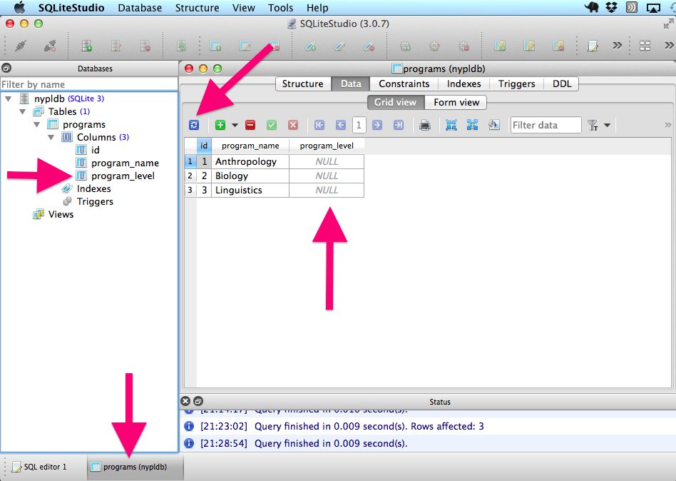

Updating fields
You can alter tables after they've been created. The SQL syntax below adds another field to the existing table and then populates that field with data.
Add another field for "program_level" to the existing table:
ALTER TABLE programs --selects the "programs" table to update ADD program_level VARCHAR; --adds a "program_level" column, which is a stringIf the query was successful, your database should now look like this (you may need to hit the refresh button to see the changes):

- Now, let's populate the new empty "program_level" field with some data
UPDATE programs --select the table to update
SET program_level = "Ph.D." --select the field and value to update
WHERE program_name = 'Linguistics'; --select the condition for updatingChallenge
Update the "program_level" field for "Biology" and "Anthropology".
Hint: You can do this with one statement using_ IN
Solution
UPDATE programs
SET program_level = "Master's"
WHERE program_name IN ("Anthropology", "Biology");